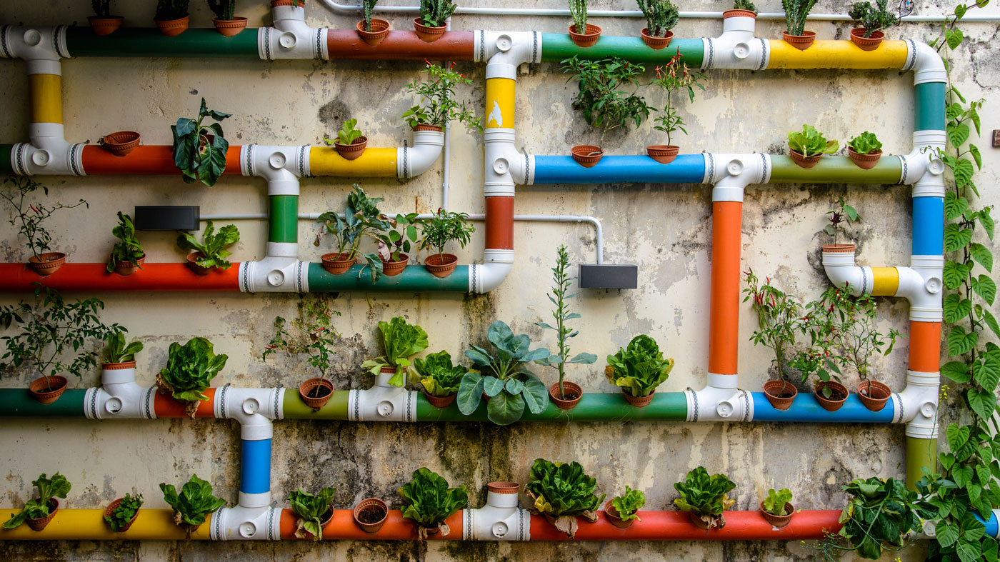

Do campo á cidade, a relação entre a agricultura e o desenvolvimento urbano é fundamental para garantir o abastecimento de alimentos, impulsionar a economia e promover a sustentabilidade. A agricultura de precisão surge como uma abordagem inovadora que vem á otimizar os processos agrícolas, aumentar a produtividade e reduzir os impactos ambientais, representando uma oportunidade única para intregar efetivamente o campo e a cidade.
Ao considerar a hipotética situação proposta, é crucial refletir sobre os impactos positivos da agricultura de precisão na integração entre o campo e a cidade. A utilização de tecnologias avançadas, como drones, GPS e sensores, permite uma gestão mais precisa dos recursos agrícolas, resultando em maior produtividade e menor impacto ambiental.
Além disso, a ênfase na agricultura de precisão promove a geração de oportunidades tanto para comunidades rurais quanto urbanas. No campo, os agricultores têm a possibilidade de adotar práticas mais sustentáveis e aumentar sua rentabilidade. Na cidade, a implementação de tecnologias agrícolas inovadoras pode impulsionar o desenvolvimento econômico e a segurança alimentar.
Portanto, é essencial compreender que a intregações entre o campo e a cidade, aliada á agricultura de precisão, não apenas colher oportunidades para o setor agrícola, mas também contribui para o progresso social econômico como um todo.